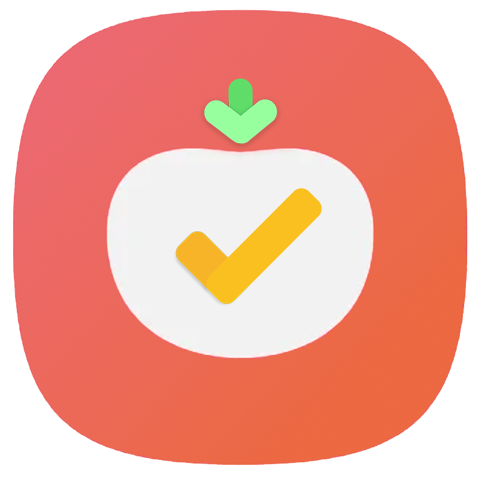
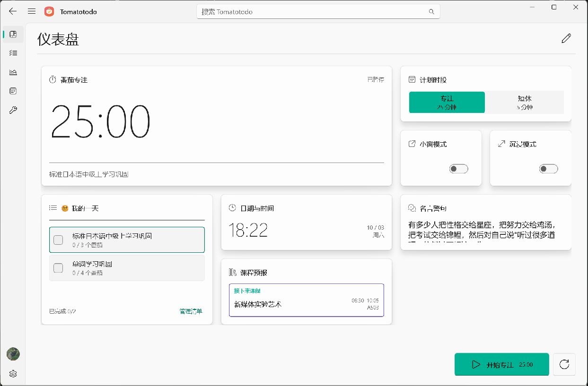
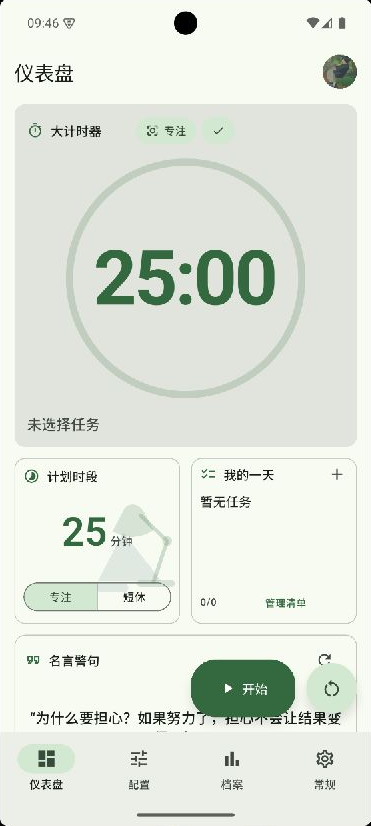
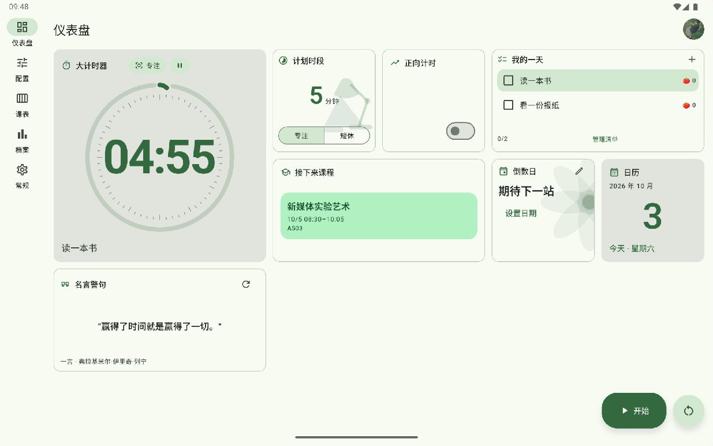
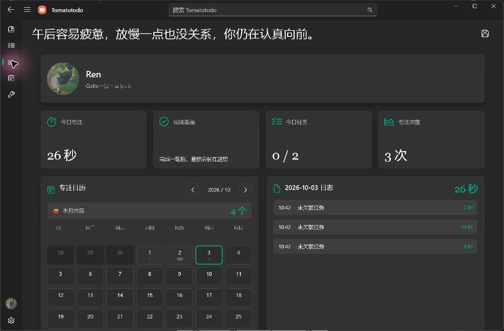

专注，自有节奏。
番茄计时、短休与正向计时。
选择手动或自动循环，找到适合自己的步调。

Tomatotodo专注，自有节奏。把复杂的计划，变成清晰的下一步。
从桌面到掌心，让每一段投入都看得见。


一份专注，随你而行。Windows · Android
不是把每一分钟填满，
而是让你知道，这一分钟想做什么。
Tomatotodo 将计划、专注与回顾放在一起，
为你的日常建立一个从容的节奏。
把时间还给重要的事。
其余的，交给清晰的工具。
番茄计时、短休与正向计时。
选择手动或自动循环，找到适合自己的步调。
多套清单，任务副标题与番茄预算。
从“要做什么”，到“现在就做”。
日历、日志、统计与热力图。
真实记录你的专注，让坚持变得可见。

编排仪表盘，选择喜欢的主题色。
课程与倒数日，也能成为日常的一部分。
电脑版使用指南 · Windows 1.6.2
从安排任务，到专注与回顾。
把计时、任务和日常信息放在同一张工作台上。
明亮的白天，沉静的夜晚。
同一个工作空间，两种舒服的状态。
浅色模式 · 清晰、轻盈的白色工作台
浅色、深色，或选择自动模式跟随系统外观。用适合当下环境的界面，陪伴每一段专注。
Windows 可选择主题色与自定义颜色；Android 以 Material You 色彩方案组织界面，也支持跟随系统主题色。按钮、卡片与细节，形成各自协调的色彩层次。
正在应用：青绿 · 浅色
点击色板查看客户端实际配色 · 三种主题色均提供日夜实机画面点击放大，细看每一处。
桌面、手机与平板，各有自己的节奏。
截图摄于 2026 年 10 月 3 日。Windows 为已安装客户端，Android 为手机和平板模拟器内运行的客户端。截图内容反映捕获时的实际数据与状态。
选择你的设备。把时间留给你在意的事。
Windows 10 2004+ / Windows 11 · x64
Android 7.0+ · 手机与平板 · APK
升级前建议导出数据备份。Android 当前 APK 使用调试证书签署；安装及校验说明见对应 Release。
Android 版支持手机和平板，并针对屏幕大小与方向调整导航和内容布局。桌面小组件的尺寸与显示效果也会受到启动器网格影响。
可以本地使用。云端账户提供数据迁移、同步和手动上传入口；云端功能需要网络及可用服务。进行覆盖或迁移前，建议先导出 JSON 备份。
当前版本提供 41 个语言／地区选项与跟随系统模式，不支持的系统语言回退英文。翻译持续完善中，欢迎反馈译文与布局问题。
Windows 与 Android 源码分别位于 GitHub 仓库的 windows/ 和 android/ 目录。欢迎通过 Issues 提交建议，附上系统、版本和复现步骤。